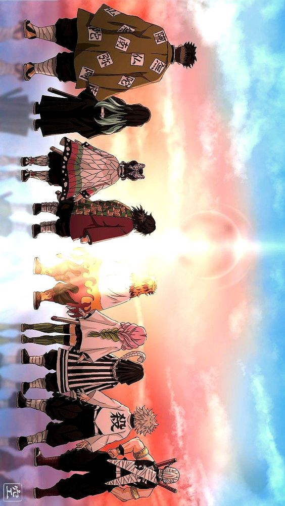
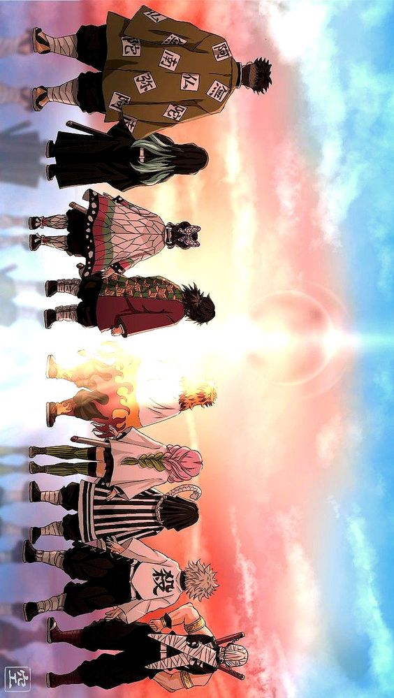

A aventura é baseada nos mangás de Koyoharu Gotōge e foi lançada na televisão em 2020. Na trama, o guerreiro Tanjiro busca vingança contra o demônio Muzan, responsável por assassinar sua família e transformar sua irmã Nezuko em um monstro.